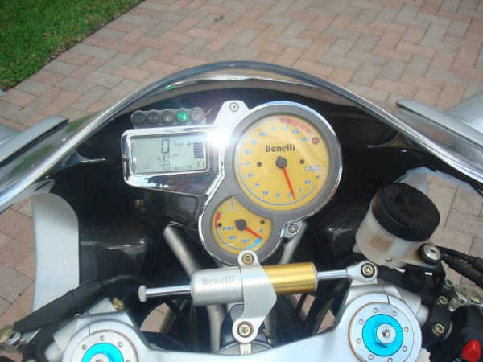
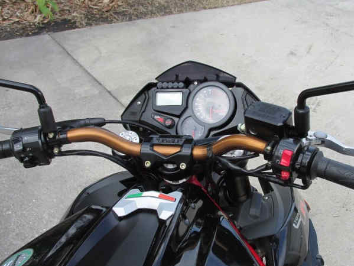
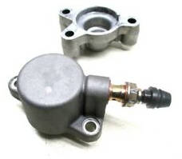
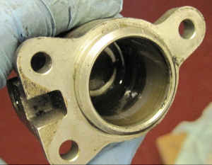
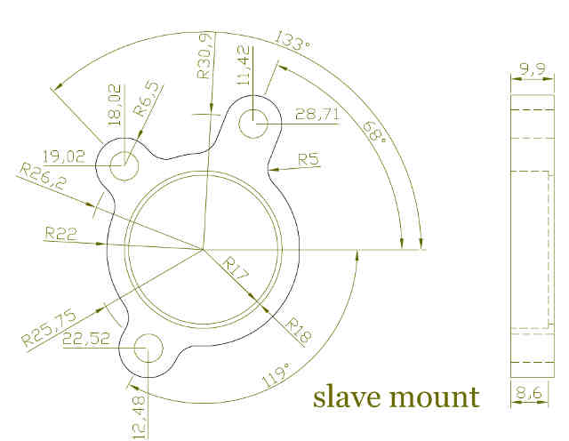
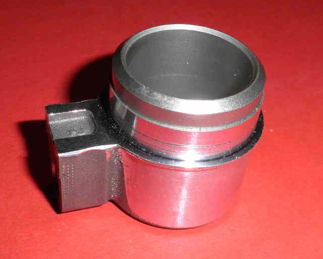
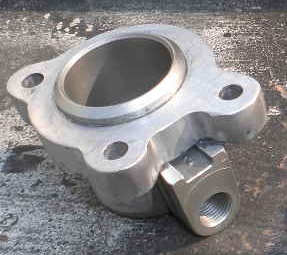
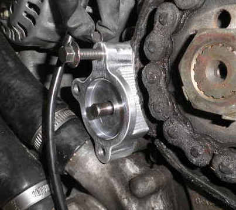
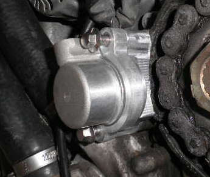
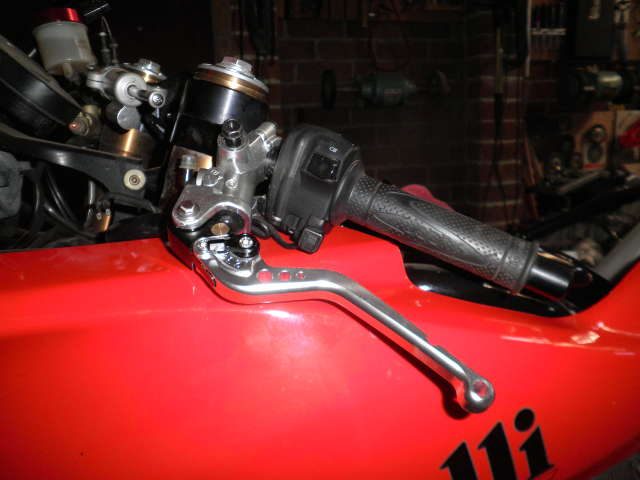

(4 Apr 2017)
After a couple of broken clutch cables in short succession, Nell was converted to hydraulic actuation
using an Evoluzione Cyclesports slave cylinder and a 2003 Ducati ST4S master cylinder (13mm).
Unfortunately, Evoluzione Cycle sports subsequently closed up shop, so their slave cylinder is no longer available.
The new clutch lever was supplied by ASV Inventions, p/n: CRC552
This matches the ASV brake lever p/n: BRC555
From Distracted Rider - circa September 2009
"I used an Aprilia Caponord Brembo Clutch Master cylinder. Looks like the OEM Benelli Brembo Brake Master Cylinder."
rionero963 provided
the full details of his converson
based on a Ducati slave cylinder (748 - 749 - 996 - 998 - 999 - S2R - MS4 - MS4R - MS4Rs - ST2, 3, 4.)
"hang loose" used rionero963's conversion details and an Oberon after market Ducati slave cylinder
with his own adaptor plate
If done right, you should:-
|  |  |
| This is the Tornado cockpit. The clutch cable makes a right angle bend at the lever, which adds friction to the cable even when new, but as the inner liner wears, friction steadily increases, until the liner no longer "lubricates" the cable. Then it gets really bad. | This is the TNT cockpit. The cable clutch has a gentle bend from the lever. It is much closer to a straight pull and so has nowhere near the friction of the Tornado and as a result, will last vastly longer and require a much lower pull force. |
If I had a TNT or TreK I probably wouldn't bother with a hydraulic conversion, although point 3. above is a compelling argument. My TR650 Husky layout is similar to the TNT and I'm more than happy with it. The RXV is also similar, but it has a 20 kg pull, more than twice that of the Tornado. I'll be looking into ways to reduce that.
Nell's cable broke the second time in 2008 at 45,000 km, and it was the last straw! It did give me notice of impending disaster. It felt springy then broke a couple of uses later. When it failed the
first time, 6 months earlier, it gave me no advanced warning at all. I pulled the clutch in approaching a set of lights, and nothing. I had to think very quick and take a slipway left. Not something
I wish on anyone.
At that time, I couldn't find neutral at a stand still. That changed as soon as I installed the hydraulic system, so obviously it gave me more lift than the cable did, the way it was set.
Chances are, if I'd adjusted the cable system perfectly, neutral would have been easier to find, but to do that requires two adjustments, one at the lever, the other at the clutch.
With a hydraulic system, you only have one - the amount of fluid in the system. It makes little difference where the clutch adjuster is set, as the fluid compensates.
The only thing to worry about is how far out that adjuster is set. Too far and it will touch the clutch cover, or worse, lift the top plate clear of the basket.
Of course, lift is all dependant on master/slave ratios.
The last 100,000 odd km with the hydraulic clutch have been trouble free. If I had stuck with the cable, I would be on my third and waiting for it to break.
No doubt the bike would have been out of commission for months waiting for them to arrive, because you can't simply replace the inner and expect the problem to be solved - as I found in 2008.
| Jane | Nell | mikerj | Houlster | cable | |
parts | RSV 2007 (Brembo PR15) | ST4 / Evoluzione | PSC12 | ||
Master cylinder bore diameter | 15 | 13 | 12.7 | 12 | 5.95 |
Slave bore diameter | 28 | 25 | 31 | 29 | 26.27 |
Master cylinder lever pivot to index finger | 90 | 84 | 80 | 80 | 91 |
Master cylinder lever pivot to piston | 18 | 23 | 27 | 24 | 29 |
maximum lever movement | 47 | 47 | 47 | 47 | 43 |
ratio | 17.4 | 13.5 | 17.7 | 19.5 | 13.9 |
lift {(M) = measured} | 2.7 (M) | 3.5 (M) | 2.7 | 2.4 | 3.1 |
Force @ index finger (kg - measured) | 8.2 | 8.8 |
Just a couple of words on the cable numbers before this is wrapped up.
If you measure all of the lever lengths in the cable system, they can simply be "called" bore diameters, but they must be swapped. It's a close approximation for narrow angles when the pull is tangential,
but gets worse the greater the angle you pull the lever through.
The clutch command lever is 26.27 mm from centre to centre. The lever that pushes the clutch "pin" can move it 5.95 mm max.
These numbers are academic. Of greatest interest is the final ratio from lever to plate lift, which in the case of the cable, is 43 / 3.1 = 13.9
|  |  |
| 2007 RSV Slave Cylinder and base | The RSV slave mounting holes are in a different position to the Benelli Tre's |
|  |  |
| The Tre Slave mounting base. | RSV slave with it's mounts removed, ready to accept the Tre slave mount. |
|  |  |
| Slave with Tre mount glued using JB Weld, which only lasted a day. TIG welding solved the problem | Slave spacer in position. |
|  |  |
| Slave checkfit (Sorry, no pics of the welded slave) | Brembo PR15 Clutch Master. No switch was supplied, so a pressure switch was installed. A mechanical switch would be better, allowing the engine to start without clutch fluid. |